Welcome to the N4ServerIcon v.91 tutorial. We hope this will help you get through the process of setting up the N4ServerIcon with some kind of ease. It is very important you follow all steps in this tutorial or we can't promise that it will work on your server.
First things first, make sure you have downloaded the complete N4ServerIcon package. If you don't have it, click here for the Zip file.
Next thing, open your graphics program and create an icon. (preferred size of 64x32) Note: You can create the icon with an alpha channel.
Once you have finished creating the file, save it as a 32-bit Targa (.tga) file in a place that is convenient for you to find.
Note: You CANNOT create the file as a 24-bit or 16-bit targa. UnrealEd will crash.
Now, go to your Ravenshield folder either by browsing to it on your hard drive, or go to the program group in your Start Menu and open the Ravenshield Map Editor. 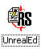
First thing you need to do once the UnrealEditor is open is to familiarize yourself with the Textures window. This is where we are going to create the icon so that it will be compatible with the Ravenshield textures. The window should look something like this.
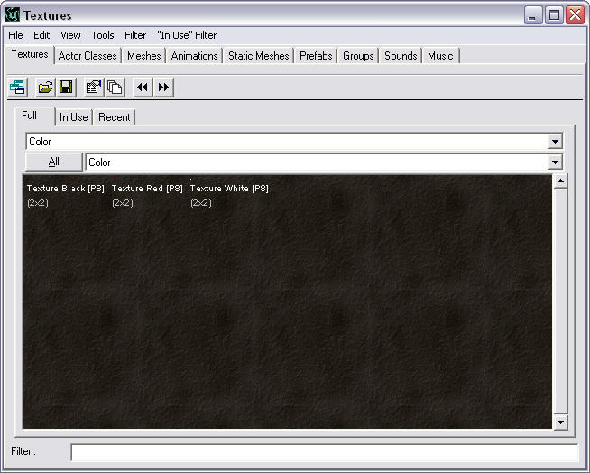
Now we need to Import your targa file from your hard-drive. Click the "File>Import."
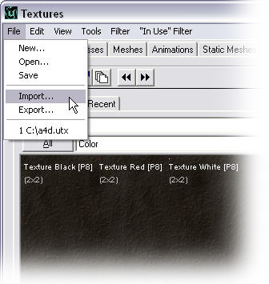
Now, browse to your targa file and open it. This will open the Import dialog box. For this example we will call the package "MyServerIcon_T" (Make sure it is a unique name). Next pick a group & name for your texture. For this example we will call the group "mygroup" and the texture "mytex." (See example below)
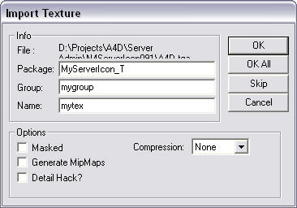
Click ok and import the file.
If your icon has an Alpha Channel then you need to right click it and open the properties window.
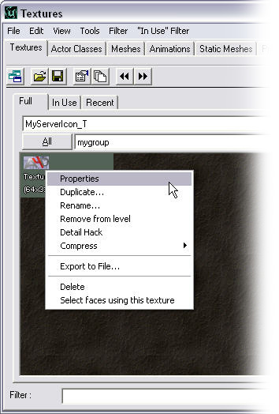
Then click the + sign next to "Surface" to expand the list. From bAlphaTexture select "True" to enable the Alpha Channel. (See below)
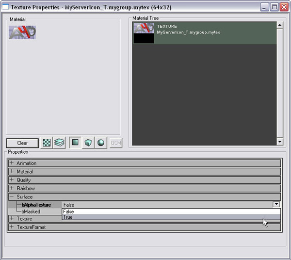
To save this setting just close the window.
Next, go to "File>New." Package and Group should already be filled. All you need to do is name it. For this example, we will name it "myfb". Under the MaterialClass drop down, select "FinalBlend" and click "New"
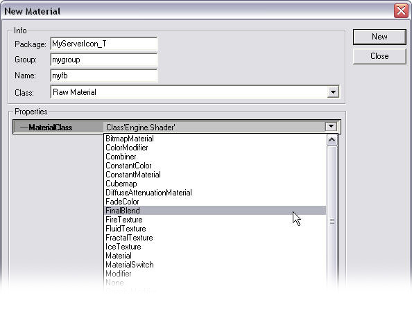
Now Right-Click your "myfb" file, and go to Properties. Under "FrameBufferingBlending", select "FB_Alphablend".
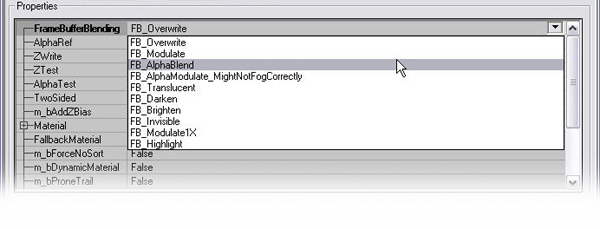
Now go to the Material section and select your Texture. (It may be easiest just to type the name of your texture, which, in this example is "mytex". Refer to the example below) Also select this texture for your "Fallbackmaterial"
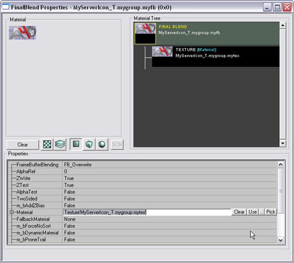
Just close the window to save your settings. Now, it is time to save your texture file. Go to "File>Save"
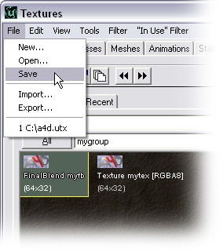
Now, most people like myself have this problem.
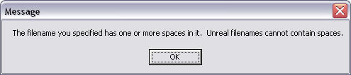
It's not all that hard. This comes from a bug in the UnrealEditor that causes it to error out when trying to save to the Ravenshield directory. This is due to the fact that Ravenshield installs the game with spaces in the folder names. So, the easy way around this is to just save the file directly to your C:\ drive (or similar folder with no spaces)
Once you have saved the file, close the editor and move on to Step 2 >